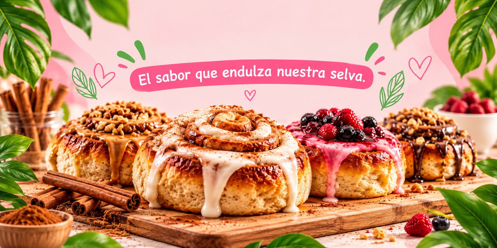
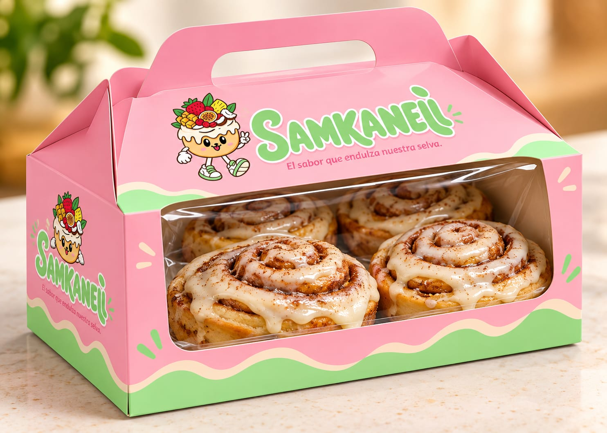

02 — EDAD
Jóvenes y adultos
que disfrutan lo natural
Personas que valoran los productos dulces, los sabores novedosos y los detalles elaborados con identidad de la Selva Central.

Jóvenes y Adultos
Buscan sabores atractivos, productos novedosos y opciones para compartir.

Familias
Eligen productos para acompañar reuniones, regalos y momentos en familia.
03 — ¿POR QUÉ ELIGEN SAMKANELI?
Sabores que conquistan corazones
Nuestros clientes nos eligen porque en cada rollo de canela encuentran una combinación única de sabor, calidad e identidad de la Selva Central.
Más que un dulce,
una experiencia con sabor
a nuestra tierra.
 Sabores que inspiran ♥
Sabores que inspiran ♥
Combinaciones únicas
Nuestros sabores, inspirados en frutos de la Selva Central, sorprenden y hacen que cada bocado sea especial.
 Detalles que enamoran ♥
Detalles que enamoran ♥
Presentación que encanta
La cuidada presentación de nuestros productos los convierte en el detalle perfecto para compartir o regalar.
Recorrido
Del primer vistazo a la compra
Un camino sencillo y especial para disfrutar nuestros rollos de canela.
-
 1
1
EL PRIMER ENCUENTRO
Descubre
Ve nuestras delicias, conoce nuestros sabores y recibe recomendaciones.
-

2ENCUENTRA TU FAVORITO
Explora
Mira nuestros sabores, conoce los detalles y déjate inspirar.
-
 3
3
RESOLVEMOS TUS DUDAS
Consulta
Pregunta por disponibilidad, haz tus consultas y elige tu sabor favorito.
-

4TU MOMENTO DULCE
Compra y recibe
Recibe tu pedido con una presentación cuidada, listo para disfrutar.